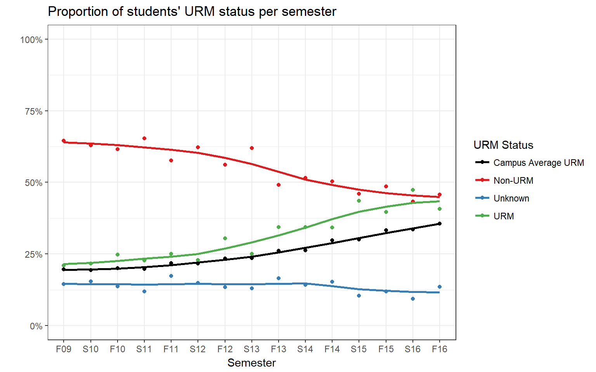
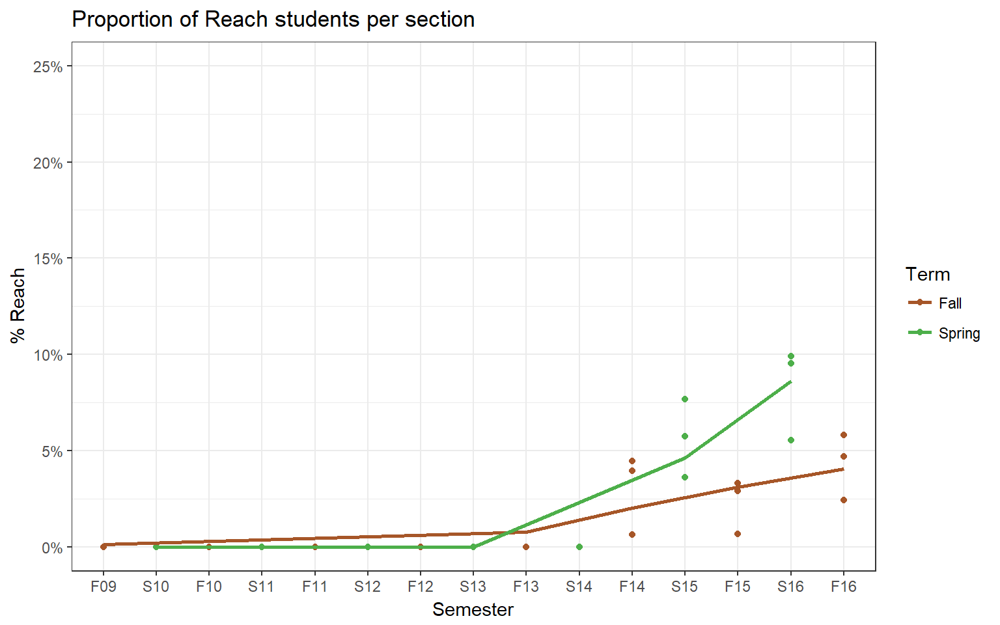
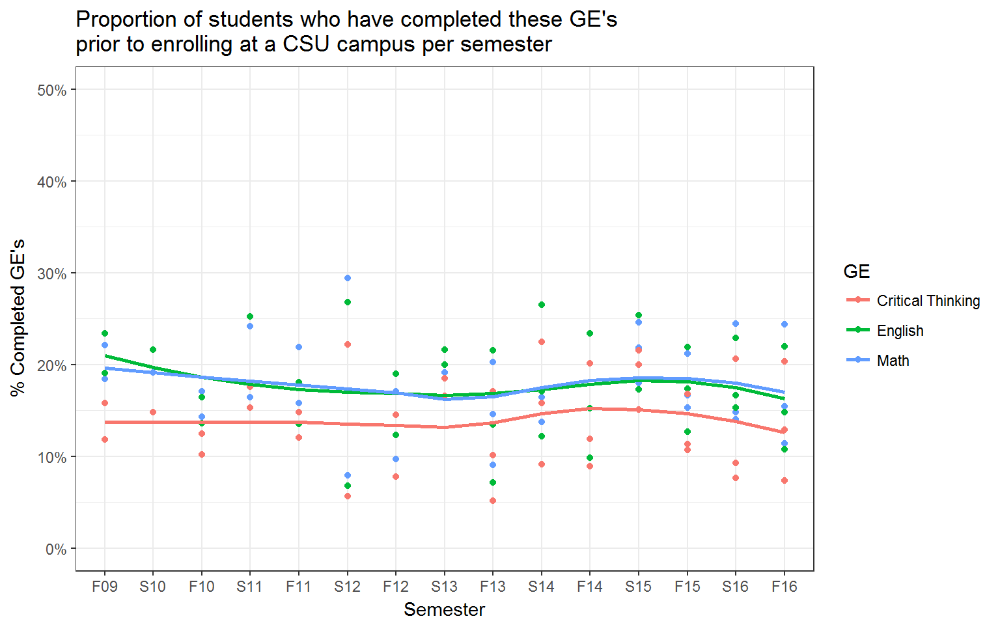
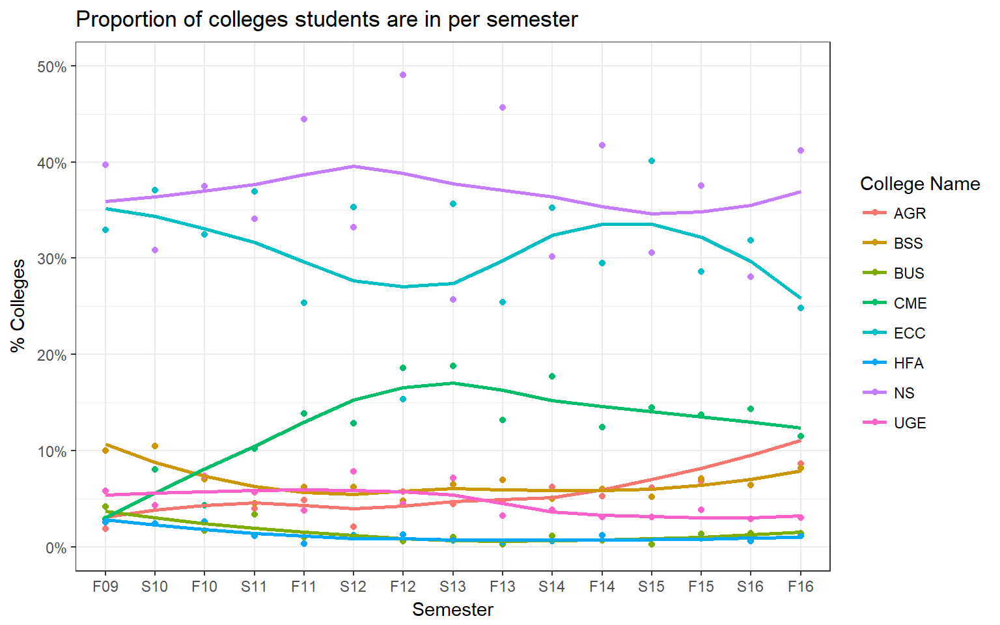

Historical Trends in Students taking Chem 111
This section analyses the trends in characteristics of the student group who is taking Chemistry 111, and compares them to the campus level averages.
We consider data from Fall 2009 - Fall 2016, for all sections of Chemistry 111. Students withdrawing or receving an incomplete (W/I) are exluded from this analysis. A repeatable grade is defined as a student reciving a D, D+, or F grades, or an unexcused withdrawl WU.
Course Characteristics
Enrollment

Spring term enrollment has steadily increased since 2009.
Class size
Across all years, class sizes range from 50 to 164, with an IQR of 26, a median of 155, and a mean of 136.2.
Fall class sizes have remained relativley constant between 140-160 since 2009, even with an additional section starting in 2013.
| F09 | S10 | F10 | S11 | F11 | S12 | F12 | S13 | F13 | S14 | F14 | S15 | F15 | S16 | F16 | Sum | |
|---|---|---|---|---|---|---|---|---|---|---|---|---|---|---|---|---|
| 1 | 163 | 164 | 160 | 93 | 159 | 159 | 162 | 160 | 164 | 162 | 155 | 144 | 155 | 163 | 160 | 2323 |
| 6 | 0 | 0 | 0 | 91 | 0 | 94 | 0 | 0 | 0 | 0 | 0 | 0 | 0 | 0 | 0 | 185 |
| 9 | 161 | 0 | 156 | 0 | 138 | 0 | 157 | 138 | 164 | 134 | 156 | 136 | 154 | 136 | 153 | 1783 |
| 17 | 0 | 0 | 0 | 0 | 0 | 0 | 0 | 0 | 94 | 50 | 116 | 57 | 141 | 56 | 128 | 642 |
| Sum | 324 | 164 | 316 | 184 | 297 | 253 | 319 | 298 | 422 | 346 | 427 | 337 | 450 | 355 | 441 | 4933 |
GPA
The average class-level gpa across years is 1.91, with standard deviation 0.27.

Spring and Fall semesters have different patterns of oscilating increase and decrease of class-level GPA.
| term | 2009 | 2010 | 2011 | 2012 | 2013 | 2014 | 2015 | 2016 |
|---|---|---|---|---|---|---|---|---|
| Fall | 1.79 (0.06) | 2.23 (0.05) | 1.74 (0.52) | 2.21 (0.1) | 1.73 (0.1) | 1.8 (0.24) | 2.02 (0.35) | 1.94 (0.06) |
| Spring | 2.08 (NaN) | 1.96 (0.14) | 1.72 (0.05) | 1.65 (0.09) | 1.83 (0.56) | 2.12 (0.17) | 1.94 (0.28) |
DFW rate
As expected we see a similar pattern, slightly different between Fall and Spring, for the number and % of student receiving a repeatable grade (D/F/WU).

As does the overall semester level rate.
| term | 2009 | 2010 | 2011 | 2012 | 2013 | 2014 | 2015 | 2016 |
|---|---|---|---|---|---|---|---|---|
| Fall | 103 (32.7%) | 63 (20.7%) | 102 (35.1%) | 68 (21.7%) | 136 (33.7%) | 149 (35.6%) | 110 (25.2%) | 148 (34.2%) |
| Spring | 40 (24.5%) | 46 (26.1%) | 80 (32.7%) | 107 (36.5%) | 88 (26%) | 76 (23.5%) | 111 (32.4%) |
Student Characteristics
Demographics
Gender

Across all semesters, 43.2% of students taking Chem111 are female. This percentage appears to be increasing in the past two years.
Age

The black horizonal line represents the average age across all students under consideration. Students taking Chemistry in the fall are on average younger than those taking chemistry in the Spring. The obvious exception is this past Spring 2016 seems to be an unusually young cohort for spring. Recall this is age at admission, not the age when the student is taking Chem 111.
Area Where a Student is From
Citizenship

Students who are recieving services from DSS

EOP Status

REACH

Any formal student group (fsg)
Race Code

URM
SOC

Pre-enrollment Information
Admission Index

| section | F09 | S10 | F10 | S11 | F11 | S12 | F12 |
|---|---|---|---|---|---|---|---|
| 1 | 3.7 (0.42) | 3.73 (0.4) | 3.68 (0.41) | 3.74 (0.42) | 3.73 (0.39) | 3.66 (0.4) | 3.7 (0.39) |
| 9 | 3.63 (0.4) | 3.73 (0.37) | 3.62 (0.4) | 3.69 (0.41) | |||
| 6 | 3.65 (0.38) | 3.72 (0.41) |
| section | S13 | F13 | S14 | F14 | S15 | F15 | S16 |
|---|---|---|---|---|---|---|---|
| 1 | 3.76 (0.36) | 3.71 (0.36) | 3.69 (0.38) | 3.74 (0.37) | 3.72 (0.36) | 3.74 (0.38) | 3.69 (0.32) |
| 9 | 3.66 (0.36) | 3.68 (0.36) | 3.7 (0.37) | 3.74 (0.38) | 3.64 (0.39) | 3.77 (0.34) | 3.69 (0.32) |
| 17 | 3.67 (0.4) | 3.73 (0.38) | 3.75 (0.36) | 3.72 (0.3) | 3.7 (0.36) | 3.8 (0.3) |
Tests and Benchmarks
GE-Breadth Course Completion Status

ELM

EPT

College prep

| Engl | Math | Lab Sci | |
|---|---|---|---|
| F09 | 6.93 (2.84) | 6.97 (3.21) | 5.31 (2.67) |
| S10 | 6.83 (2.95) | 6.9 (3.37) | 5.33 (2.72) |
| F10 | 7.07 (2.76) | 7.22 (3.23) | 5.64 (2.79) |
| S11 | 6.73 (3) | 7.12 (3.45) | 5.11 (2.74) |
| F11 | 6.93 (2.81) | 6.99 (3.31) | 5.54 (2.81) |
| S12 | 6.63 (3.04) | 6.81 (3.49) | 5.25 (2.83) |
| F12 | 7.14 (2.64) | 7.18 (2.98) | 5.89 (2.72) |
| S13 | 6.68 (3.06) | 6.97 (3.49) | 5.27 (2.84) |
| F13 | 7.11 (2.64) | 7.23 (3.03) | 5.95 (2.76) |
| S14 | 6.77 (2.95) | 6.94 (3.38) | 5.42 (2.83) |
| F14 | 6.99 (2.82) | 7.23 (3.28) | 5.92 (2.92) |
| S15 | 6.66 (3.13) | 6.97 (3.58) | 5.39 (2.91) |
| F15 | 6.98 (2.82) | 7.52 (3.38) | 5.95 (2.95) |
| S16 | 7.01 (2.82) | 7.36 (3.27) | 5.83 (2.8) |
| F16 | 6.99 (2.78) | 7.39 (3.27) | 6.03 (2.9) |
Academic Standing
College

| F13 | S14 | F14 | S15 | F15 | S16 | F16 | |
|---|---|---|---|---|---|---|---|
| AGR | 4.5 | 6.1 | 5.2 | 6.5 | 6.7 | 13.8 | 8.7 |
| BSS | 7.4 | 5.2 | 6.1 | 5.0 | 7.3 | 6.5 | 8.5 |
| BUS | 0.2 | 1.2 | 0.7 | 0.6 | 1.3 | 1.4 | 1.4 |
| CME | 12.6 | 17.3 | 12.5 | 14.2 | 13.8 | 14.1 | 11.4 |
| ECC | 25.5 | 35.5 | 29.2 | 39.5 | 28.7 | 32.4 | 24.5 |
| HFA | 1.0 | 0.6 | 1.2 | 0.0 | 0.9 | 0.6 | 1.1 |
| NS | 45.7 | 30.3 | 41.9 | 31.2 | 37.6 | 28.5 | 41.2 |
| UGE | 3.1 | 3.8 | 3.3 | 3.0 | 3.8 | 2.8 | 3.2 |
Student Level

| F13 | S14 | F14 | S15 | F15 | S16 | F16 | |
|---|---|---|---|---|---|---|---|
| 1_Fresh | 0.6 | 0.3 | 0.5 | 0.4 | 0.5 | 0.5 | 0.5 |
| 2_Soph | 0.3 | 0.4 | 0.3 | 0.3 | 0.2 | 0.3 | 0.3 |
| 3_Jr | 0.1 | 0.2 | 0.1 | 0.2 | 0.1 | 0.2 | 0.2 |
| 4_Sr | 0.1 | 0.1 | 0.1 | 0.1 | 0.1 | 0.1 | 0.1 |
Units taken this semester

| section | F09 | S10 | F10 | S11 | F11 | S12 | F12 |
|---|---|---|---|---|---|---|---|
| 1 | 12.03 (2.16) | 12.57 (2.36) | 12.22 (2.44) | 12.41 (2.3) | 12.79 (1.88) | 12.07 (2.1) | 12.5 (1.74) |
| 9 | 12.43 (2.08) | 12.15 (2.19) | 12.09 (2.56) | 12.44 (1.87) | |||
| 6 | 12.69 (2.26) | 12.47 (2.32) |
| section | S13 | F13 | S14 | F14 | S15 | F15 | S16 |
|---|---|---|---|---|---|---|---|
| 1 | 12.34 (1.94) | 12.17 (2.07) | 12.42 (1.93) | 12.18 (2.08) | 12.54 (2.26) | 12.54 (1.87) | 12.94 (2.12) |
| 9 | 12.21 (2.04) | 12.32 (1.98) | 12.5 (1.8) | 12.56 (2.24) | 12.65 (2.17) | 12.5 (1.88) | 12.63 (1.97) |
| 17 | 12.54 (1.8) | 12.42 (1.99) | 12.41 (1.81) | 12.7 (2.11) | 12.32 (1.99) | 12.87 (1.75) |